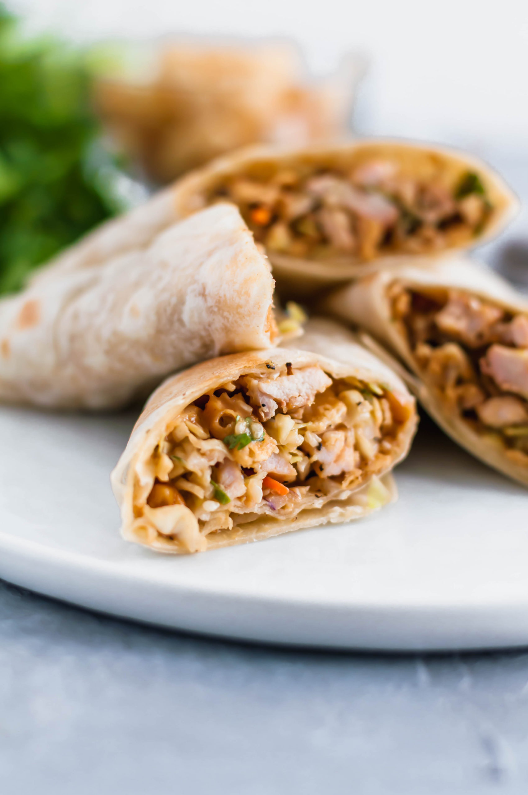

Thai Chiken Wrap

A tasty meal that can be prepped a few days ahead of time, so you can throw it all together for a fast 5-minute lunch. For a cheaper, fresher version, try preparing everything at home. Serve with your favorite store-bought peanut sauce.
- 2 skinless, boneless chicken breast halves
- salt and ground black pepper to taste
- 1/4 cup rice vinegar
- 2 tablespoons chopped fresh cilantro
- 1 tablespoon honey
- 1 tablespoon lime juice
- 1 teaspoon red pepper flakes
- 1 small head lettuce leaves, or to taste
- 2 large flour tortillas
- 3 carrots, peeled and cut into matchsticks
- 1 roasted red bell pepper, sliced